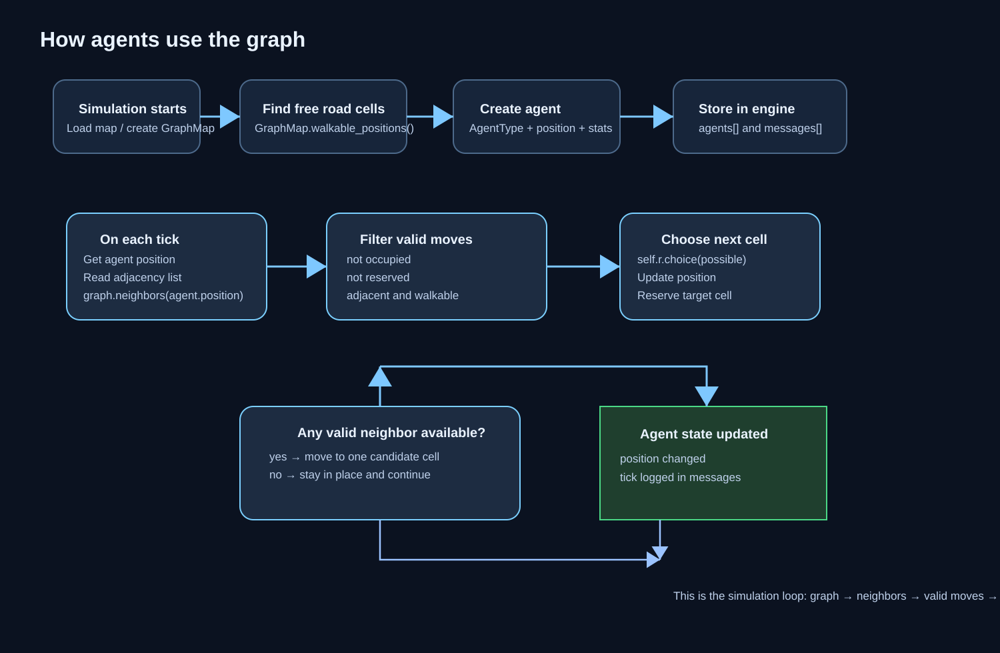

This flowchart shows how an agent uses the graph each tick: it reads its current node, looks at neighboring walkable cells, filters out occupied or reserved cells, then chooses a next cell and updates the agent position.